| 日付 | 2024年12月14日（土） |
|---|---|
| 山域 | 日光周辺 |
| メンバー | 単独 |
| 山行形態 | 日帰り |
| アクセス | 車 |
| ルート (Map) | 鶏岳登山口 (8:29) - (9:10) 鶏岳 (9:16) - (9:40) 鶏岳登山口 茶臼山登山口 (10:14) - (10:29) 岩鼻 - (10:54) 茶臼山 - (11:34) 毘沙門山 - (11:58) 毘沙門山登山口 - (12:49) 茶臼山登山口 |
本日は単独で栃木のマイナーな山2つに登ることにする。
小さい山なので2つ登っても楽々だ。
鶏岳の登山口に到着。小さな鳥居がある。
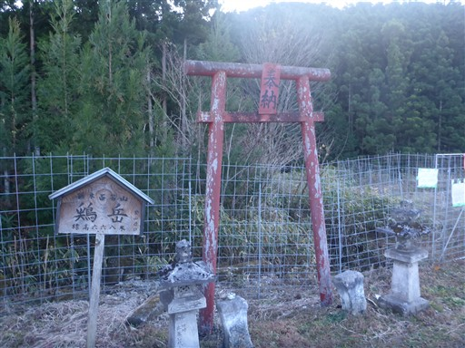
なんと、登山道が閉鎖されているとのことで、迂回をするように記載されれている。
事前の情報収集不足だった。
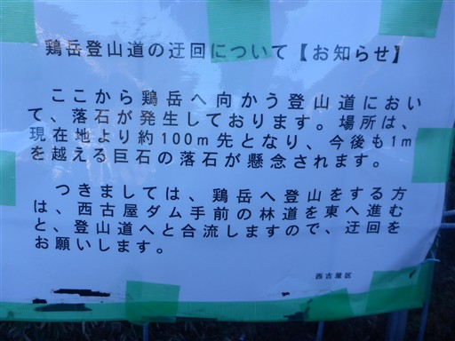
車道を歩くことになるだけなので車で移動。路肩に車を停める。標高370m。
短い山がさらに短くなってしまった。
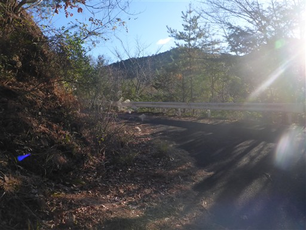
ここにも登山口を示す標識がある。
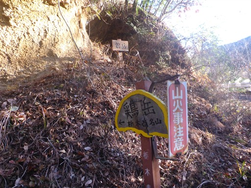
歩き始めてすぐに三合目の標識がある。車でショートカットしたのでもう三合目だ。
この後、四合目以降の標識を見ることはなかった。
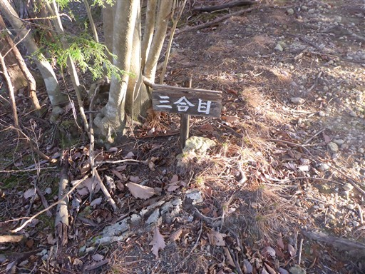
歩きやすい登山道。登山者の姿は見かけないが道はよく整備されている。
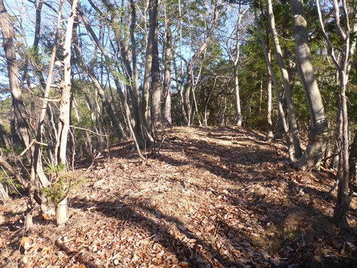
斜面が突然急になる。石がたくさん転がっているが、地質が異なるのだろうか？
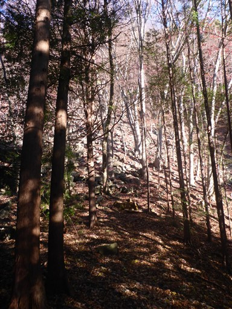
とてつもない急斜面の登山道になる。
道はジグザグではなく直線につけられている。
そして落ち葉が堆積していてものすごく滑る。
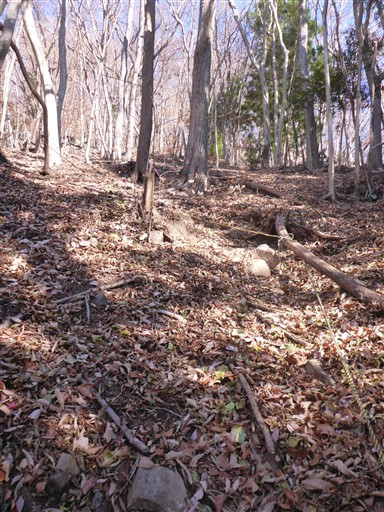
傾斜角は40度くらいだろうか。
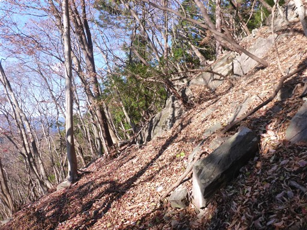
鶏岳山頂に到着。標高668m。
山頂には小さな祠がある。
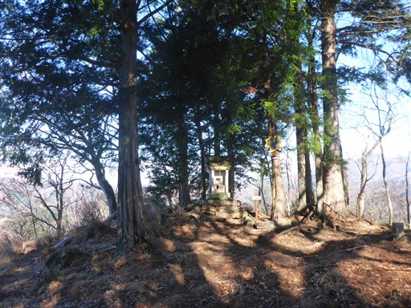
祠の前にはなぜかハサミが奉納されている。
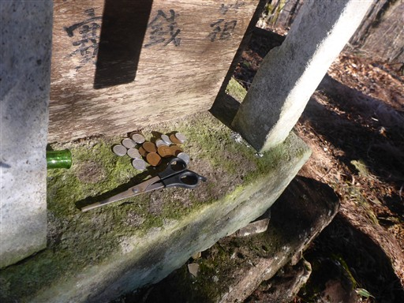
大展望が広がる山頂ではないが、日光方面はよく開けている。
並んでいるのは男体山と女峰山。もう冠雪している。
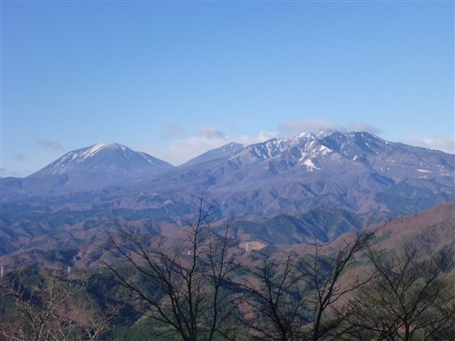
こちらは前日光の山々。
もう1つの山に登るため、展望を楽しんだらすぐ下山する。
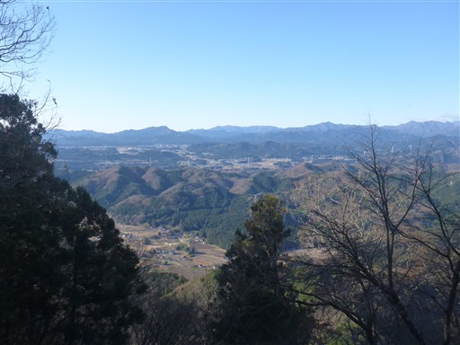
急斜面を歩いて無事下山。
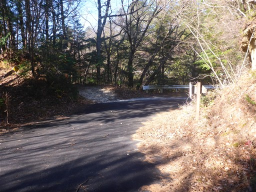
続いて毘沙門山に向かう。広い駐車場に車を停める。標高370m。
もう10時過ぎだが、停まっている車は1台もない。
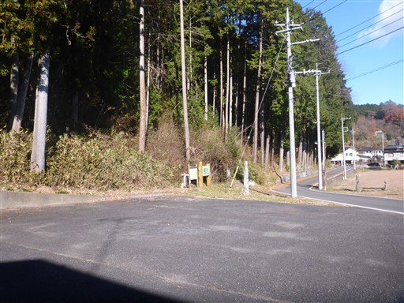
毘沙門山の手前に茶臼山の標識が立っている。
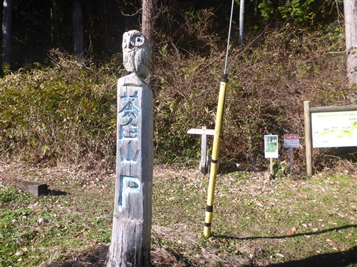
登山開始直後からものすごい急斜面の登りだ。
こちらは階段があるので登りにくくはない。
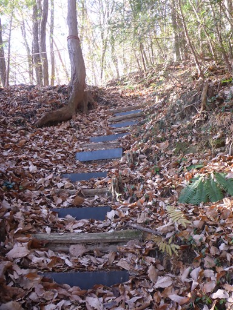
岩鼻の標識があったので、寄り道することにする。
紛らわしいが、見晴台と記載されている方が本道だ。
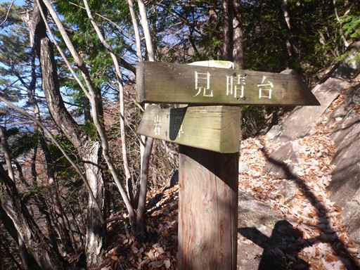
道はどんどん降る。しかも道は細く、落ち葉で滑りやすい。
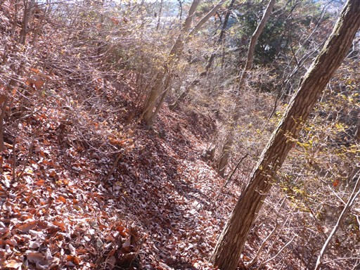
岩鼻に到着。きれいな展望が広がる。
それにしても下界が近い。登った分の半分くらいは降った感じだ。
もう少し登山道のつけ方を工夫できなかったのだろうか？
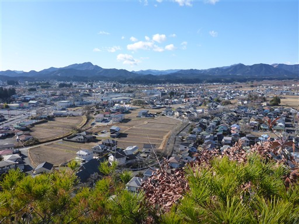
元来た道を引き返し、一登りで見晴台に到着する。
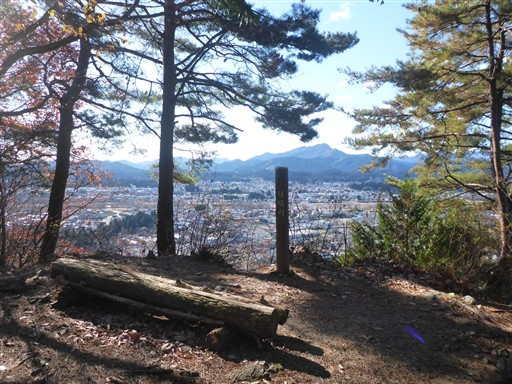
さほど見晴らしは広がらないが、木の間から男体山と女峰山が半分くらい見える。
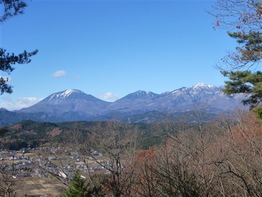
ここからは植林地帯が続く。長い尾根道だが、ほとんどが植林地帯だ。
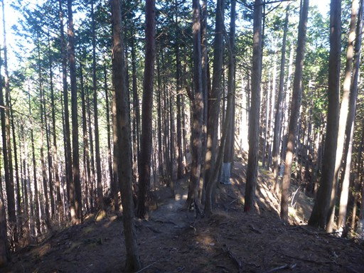
茶臼山に到着する。標高517m。
登山道の途中にある、あまりピークらしくないピークだ。
植林地帯の中で展望も全くない。
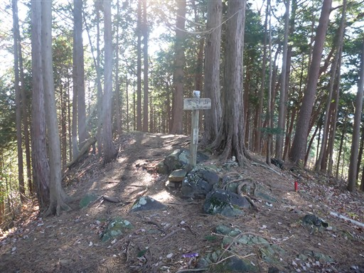
毘沙門山を示す標識が左を指しているが、まっすぐ行く道があるので行ってみる。
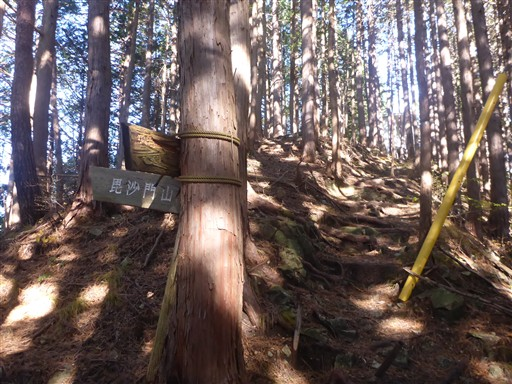
狭い山頂には電波塔が建っている。
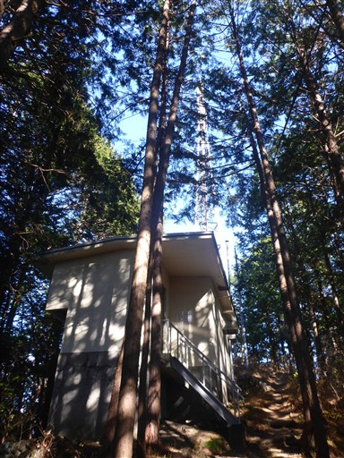
元来た道を引き返す必要はなく、先に進んで登山道と合流できるようだ。
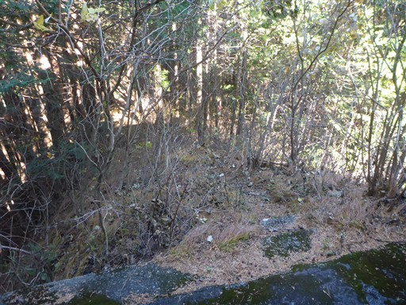
登山道の側に造りかけの林道のような道が現れる。
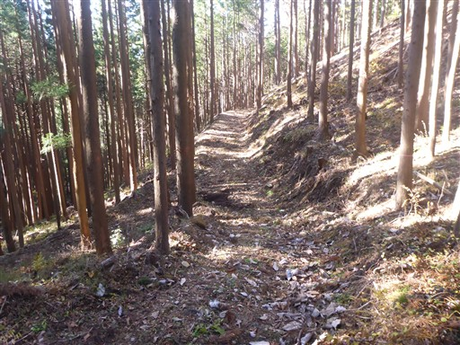
山頂直下は急斜面。
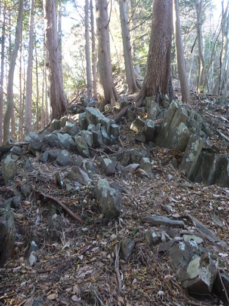
毘沙門山に到着。標高587m。
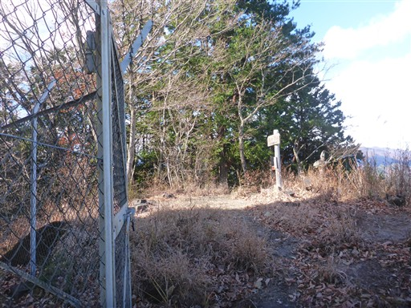
こちらの山頂には電波反射板がある。

昭和46年製造と記載されているが、今でも用をなしているのだろうか？
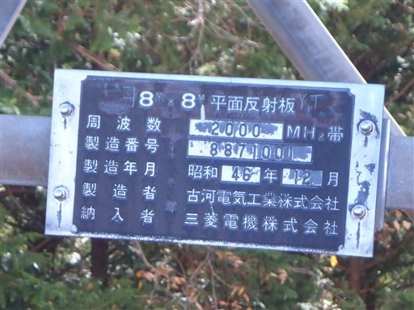
山頂からは高原山が見える。
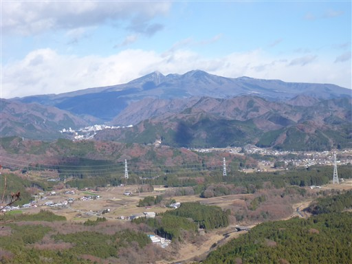
こちらは先ほど登った鶏岳。
登山道が急斜面だったことがうなずける山容だ。
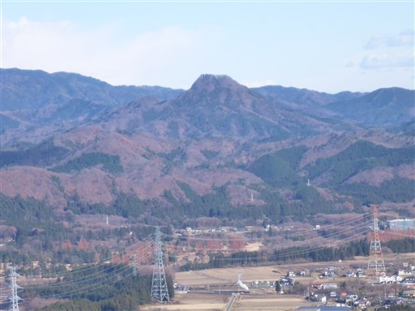
東側には高い山がなく、低い丘陵地帯が続いている。
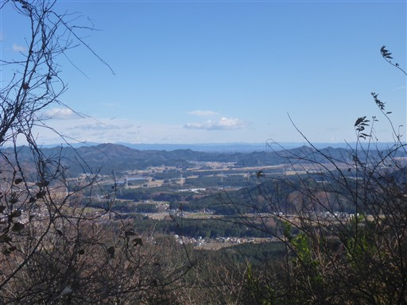
展望を楽しんだら下山開始。下山道も最初は急斜面だ。
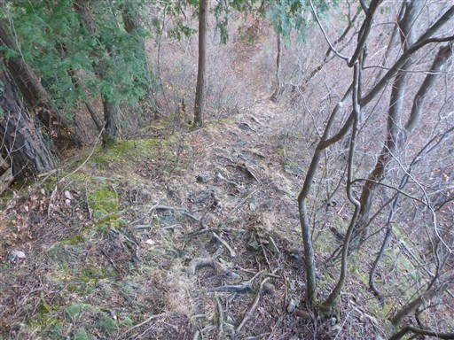
再び植林地帯になる。
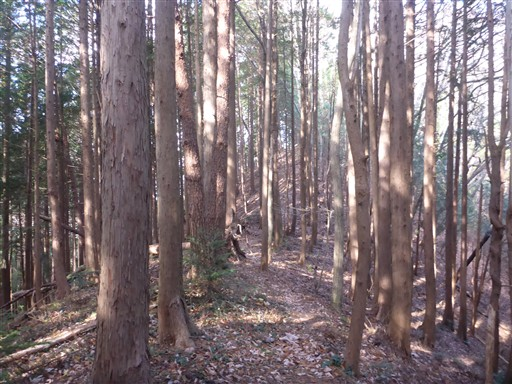
分かりにくい標識だが、ここで左折して尾根から外れる。
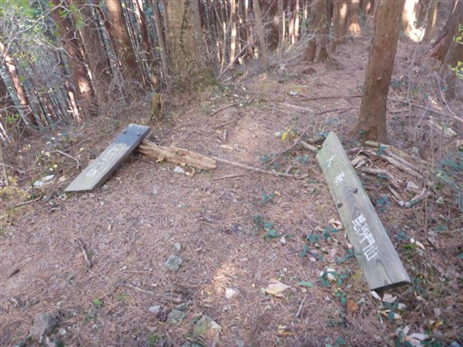
下山。ここから車道を1時間ほど歩く必要がある。
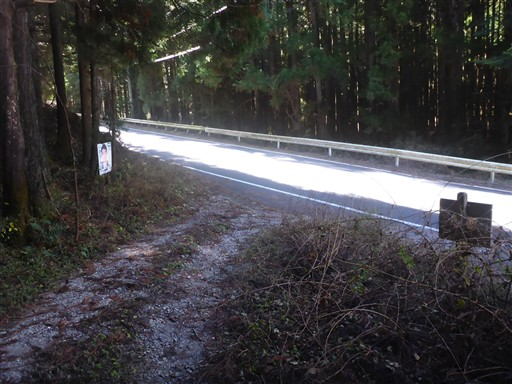
バスの本数は少ない。
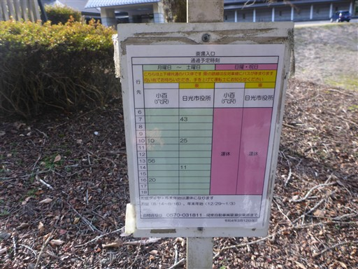
歩いてきた山が見える。左が毘沙門山、右が電波塔の建つピークだ。
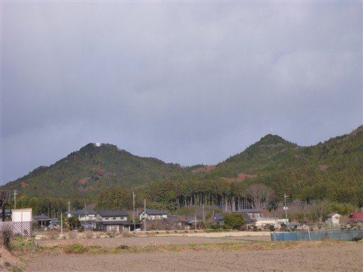
そして茶臼山。斜面に見える岩壁がおそらく岩鼻だろう。
二山とも短い山だったが、そこそこ運動にはなった。
鶏岳は急斜面登山道のインパクトが強くそこそこ楽しい山だった。
一方、毘沙門山は植林地帯がほとんどであまり歩いていて楽しく無い山だった。
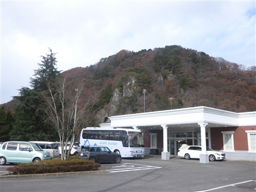